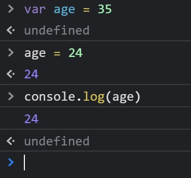
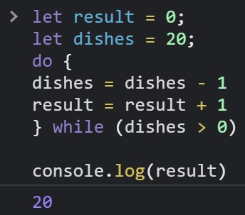
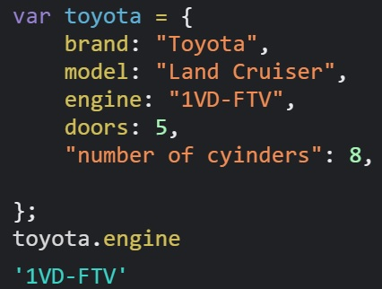
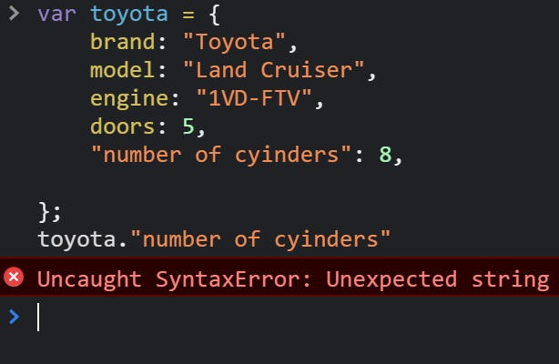
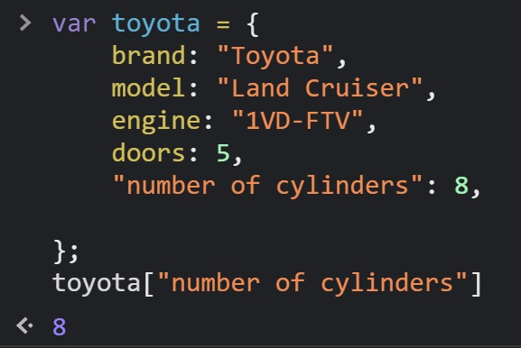
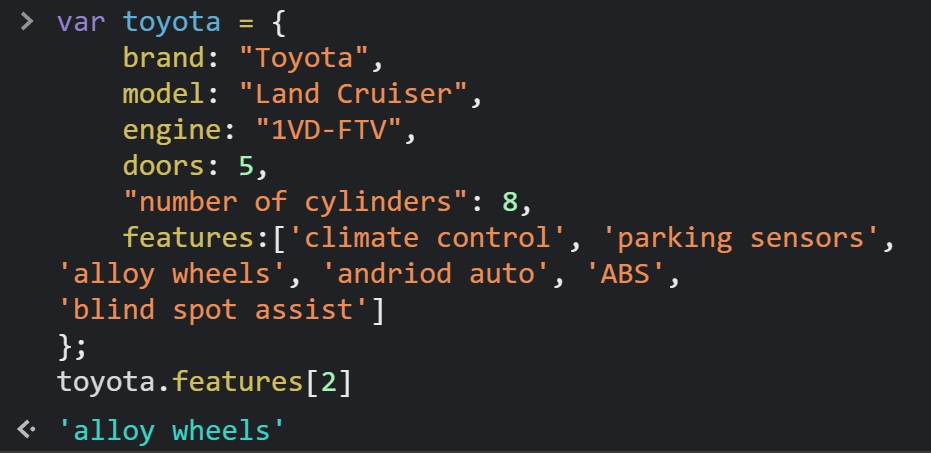
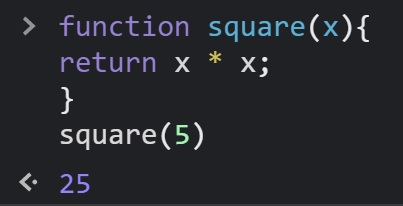

HTML is the document that holds the overall stutcture of the document or the actuall content of what is being displayed on the page. HTML stads for Hyper Text Markup Language. CSS is the way the content is being displayed. In other words; how the content looks. CSS stands for Cascading Style Sheets. Think of a web page as a game of "join the dots" and "coloring in the picture". The HTML document represents the dots on the page which is the overall structure of the page. The CSS is the applied to the html so that the image is made and then can be colored and styled using CSS as well.
Control Flow in computer programming, refers to how code is executed from the top of the file to the bottom. This means that if I were to set a variable "var age = 35" and then later in the document, change that variable "age = 24", the first varible would be overwritten and "age" would be "24."
It's important to note that different types
of
varibles have differnt scopes, meaning that depending on their type they were decleared at, they can only be
accessed within their function, which is a local varible, or globally; a global variable. Take this driving
example:
you are in driving in a 50kmh zone. (This is like setting a variable at the start of the document eg var speed =
30). Then you arrive at at 100kmh zone.(Now your speed is 100kmh eg speed = 100).
Loops continue executing the same block of code until the condition is met that will break the loop. Loops can
come
in a range if formats such as: "for", "while" and "do while". For a loop to work we must initialise a starting
value, declare a range/ time that the loop will loop for and then select the increment that the loop will repeat
for
until the range or time that the loop was allocated is used.
An example of this in everyday life could be doing
the
dishes. Lets say I have 20 dishes to wash. (I am going to "do" the 20 dishes "while" the total dishes is greater than 0. Each dish I clean will deduct
the
total dishes by a value of 1 until 0 dishes remain, at which point I stop.) In this example I log the result which is the dishes that have washed.

If only I could write a script to do my dishes...
The DOM is a tool that the web brower has that lets you interact with code on the website. You can see real time which elements on the page relate to the corresponding code, you can edit the code to change the text and style ect and you can interact with the console. Infact all of these example images are screenshots taken from the DOM's console. It is a useful tool for making local changes and seeing how they affect the web page. Or you can visit other webites and see their code if you are curious how they programmed a specific aspect of their website. You can also see how websites will behave on different devices without having to use that device.
Data is stored in an object using keys that have a value. for example we could have an object called "toyota" and we can store information in the object such as brand: "toyota", model: "Land Cruiser", engine: "1VD-FTV", doors: 5, number of clyinders: 8, ect. If we wanted to know what engine our "toyota" had we could write "toyota.engine" and it would return the value of "1VD-FTV".
This is how we access data from an object using "dot notation." If however we wanted to find the "number of clyinders" we would have to use the bracket notation because it uses a space in the name. This is what happens if we use dot notation with a string:
So we would write it like this: toyota['number if cylinders']. This would return 8.
(Yes, it helps if you can spell cylinder correctly)
An array is a way of storing a list of multiple items in one variable. Like objects, they can store a range of different value types. Arrays use zero-based-indexing which means the first item in the array is a 0, the second is 1, and so on. We can access the data in an array by specifying the index of the item we want to get. For example lets say out toyota has an array called "features" that holds the following values ['climate control' 'parking sensors' 'alloy wheels' 'andriod auto' 'ABS' 'blind spot assist']. If we wanted to check what the third feature is, we would type "features[2]" and it would return "alloy wheels"
Functions are used to perform a task. They can be useful because they can perform otherwise time consuming complex tasks. They are first defined by using the "function" keyword and then they can take a number of arguments. These are user inputs (but don't nessessarily have to have an argument). Then they perform the task as described in the brackets{}. Once the fuction is called they will then execute the function. Look at this example: lets say we wanted to make a function that squares the number that the user inputs and then it returns the answer. We would first define it: "fuction square(x)" then we would write the function{ return x * x} then we would call it (square (5)) this would give the answer 25.
